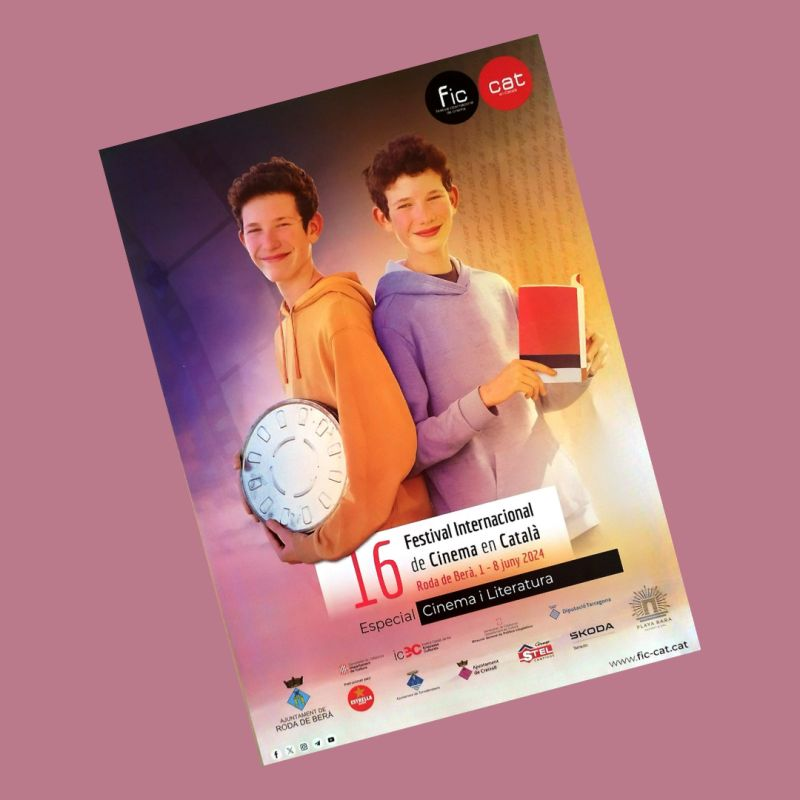
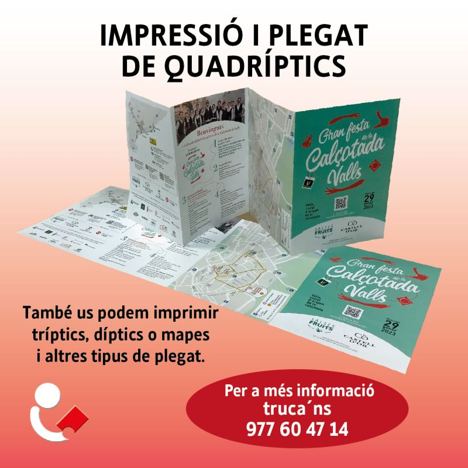
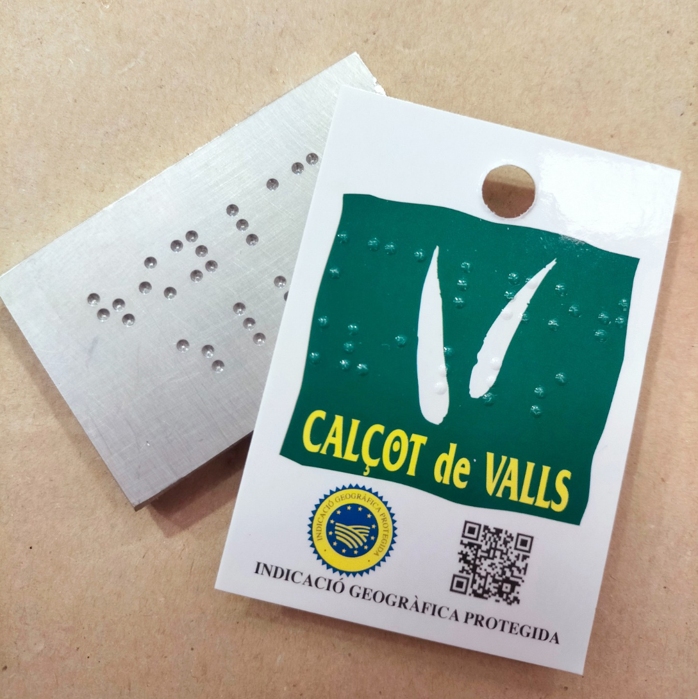

Un any més ens hem encarregat de imprimir els treballs per al Ficcat. Ja en portem 16
Festival internacional de cinema en català de Roda de Berà.

Festa de la Calçotada
Aquest cap de setmana a Valls se celebrarà la Festa de la Calçotada i al nostre taller vam imprimir i plegar els quadríptics del programa.

Demà comença una nova edició del FIC-CAT Un any més ens hem encarregat de imprimir els treballs per al Ficcat. Ja en portem 17.
Festival internacional de cinema en català de Roda de Berà. Esperem que sigui tot un èxit

Hem començat l'any amb la impressió de les etiquetes de calçot que enguany incorporen el sistema de lectura Braille, i que avui se celebra el dia mundial.
La iniciativa va ser de la IGP Calçot de Valls i amb tot aquest procès hem tingut la col.laboració de la ONCE. A la imatge podeu veure el gravat de magnesi per poder fer el relleu en sec.